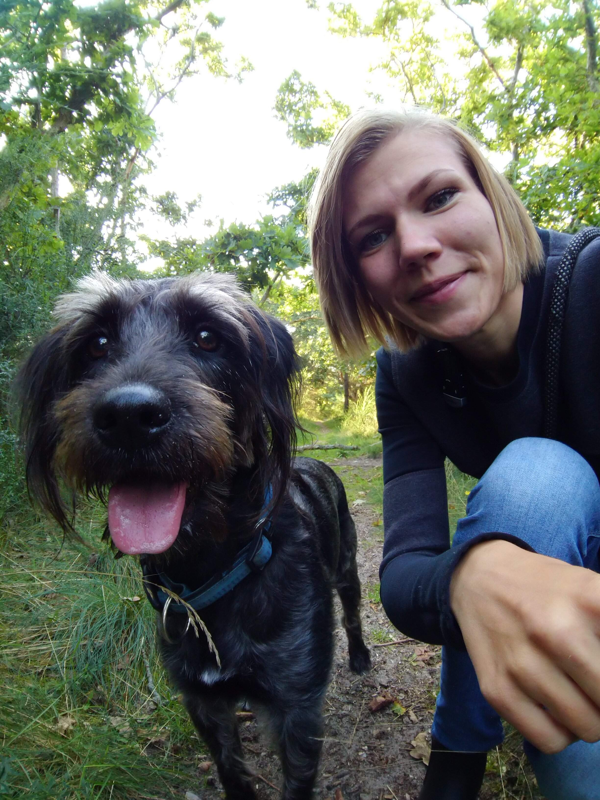
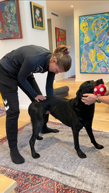
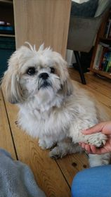
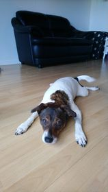

Jeg tilbyder kraniosakral terapi behandlinger til hunde i alle aldre
i region hovedstaden og Nordsjælland.
Der er både mulighed for behandling hjemme hos mig og i dit eget
hjem.


Gammel jagthund.
Han lægger al sin kropsvægt på forbenene og støtter slet ikke på bagbenene.
Han bliver behandlet for at aflaste forbenene og styrke bagbenene.

Han blev overfaldt og skambidt af en strejfede hund.
Han blev behandlet for de traumatiske hendelser. Det har hjulpet ham med at hele og blive bedre til at håndtere oplevelsen.
Hans glade personlighed kom igen og det område der blev bidt kunne igen kæles for uden at han blev skræmt.

Han fik hysteriske anfald og han "trøstespiste" opsøgte og tiggede after mad konstant.
Behandling har hjulpet ham med at falde til ro og mindsket hans trang til at "trøstespise". De hysteriske anfald opstår mindre og i kombination med en adfærdsrådgiver, er hans hverdag blevet mere struktureret.